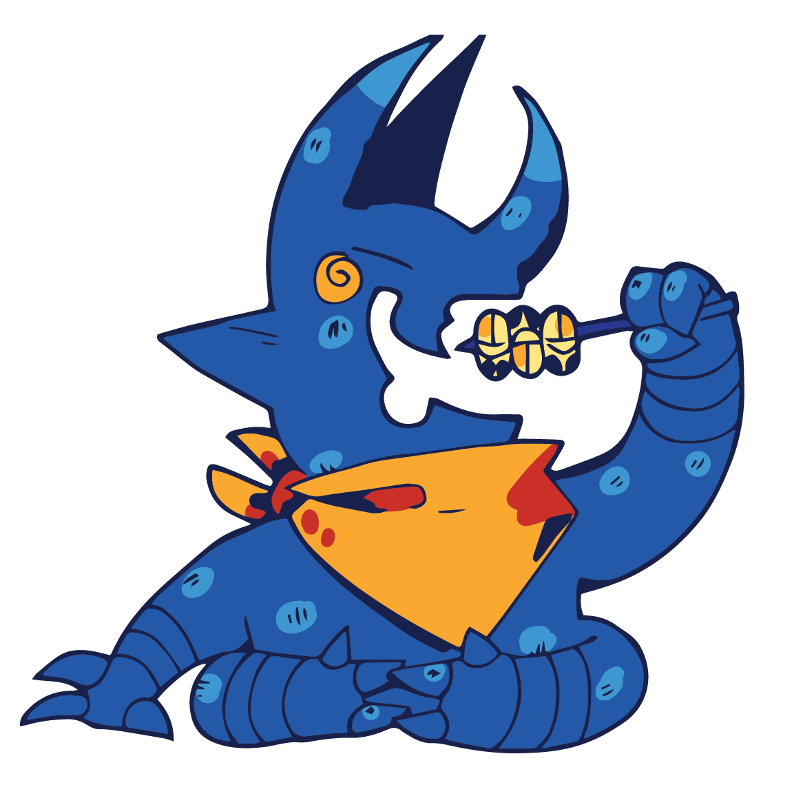

Insects have been a part of human diets for thousands of years, with evidence of their consumption found in prehistoric archaeological sites. Throughout history, entomophagy has been a common practice in many cultures, particularly in parts of Africa, Asia, Latin America, and Oceania. In some societies, insects were considered a delicacy and were reserved for special occasions, while, in others, they were a staple food source. The roots of entomophagy vary depending on culture and region, but common reasons include the nutritional benefits of insects, their abundance and accessibility, and the cultural and religious significance of certain species.
